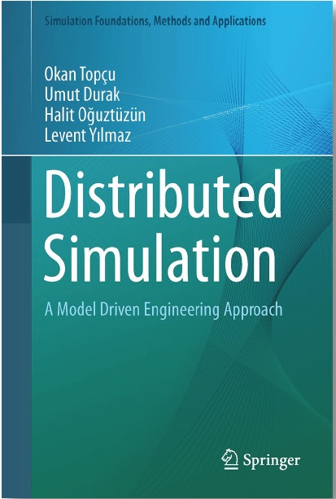

|
Dr.
Levent Yilmaz
Professor
Computer
Science
and Software Engineering
Ginn College of
Engineering
Auburn University
Email: yilmaz@auburn.edu
Quote
- "Computer
Science is no more about computers than astronomy is about
telescopes."
E. W. Dijkstra
Selected Activities and Awards
- Fellow, Society
for Modeling and Simulation International (SCS).
- Editor-in-Chief of the
Simulation:
Transactions of the Society for Modeling and
Simulation International
(2008 - 2016).
- Associate Editor
of the Journal of Simulation (2021 - present)
- Editorial Board Member of
the International Journal of Simulation and Process
Modeling (2004-present).
Associate Editor of the
International Journal of Engineering Education
(2006
- present).
- Associate Editor of the
Springer Complex Adaptive Systems Modeling Journal
(2012 - 2020).
- Associate Editor of the
Simulation & Gaming Journal
(2008 - 2016).
- Elected Member of the Board
of Directors of Society for Modeling and
Simulation International (2006 - 2008, 2009 - 2011,
2011 - 2013).
- Vice President for Publications of the Society for
Modeling and Simulation International (2011 - 2013).
- Distinguished Service Award,
Society for
Modeling and Simulation International,
2012, 2016.
- Distinguished Professional
Achievement Award,
Society for
Modeling and Simulation International,
2011.
- Auburn University External
Consulting Award,
Auburn
University,
2010.
- Member
of Upsilon
Pi Epsilon, Honor Society in Computing Sciences.
- Founding Organizer and General
Chair of
the annual Agent-directed
Simulation
Symposium series
(2005-2014)
|
Levent
Yilmaz is the Alumni Distinguished Professor of Computer
Science and Software Engineering
in the Samuel
Ginn College of Engineering at Auburn
University.
Research Interests
Simulation Theory & Methodology
- Agent-Directed
Simulation - Agent
Simulation, Agent-Monitored Simulation,
Agent-Supported Simulation
- Model-Driven Science and Engineering for Computational Discovery
- Self-Organizing and Adaptive Systems
Multi-Agent Systems - Distributed AI, Collective Intelligence, Cognitive Architectures, Collaborative Problem Solving and Learning
Complex
Adaptive
Systems
-
Computational explorations in socio-technical,
cognitive, cultural systems: Science of science
and innovation policy, systems
models
of collective creativity, computational models of
scientific discovery, conflict simulation, computer
simulation of projects, organizations, communities,
and processes.

Teaching
- COMP 7740: Complex
Adaptive Systems
- COMP 8700:
Agent-Directed Simulation
- COMP 7790:
Model-Driven Engineering
- COMP 3700: Software
Modeling & Design
Selected Publications
Complete list is available
here
- Yilmaz L. (2019) A Quantum Cognition Model for
Simulating Ethical Dilemmas among
Multi-perspective Agents, Journal of Simulation,
DOI: 10.1080/17477778.2019.1603090
- O'Mahony A., P. K. Davis, S. Appling, M. E.
Brashears, E. Briscoe, K. M. Carley, J. M.
Epstein, [...], A. Tolk, R. Vardavas, and L.
Yilmaz (2019). ``Panel Discussion: Moving
Social-Behavioral Modeling Forward," chapter 33
in Social-Behavioral Modeling for Complex
Systems, pp. 753-787. Wiley.
- Yilmaz L. and S. Sivaraj (2019). "A
Cognitive Architecture for Verifiable System
Ethics via Explainable Autonomy," in Proceedings
of the 2019 Annual IEEE International Systems
Conference. April 8-11, Orlando, FL.
- Yilmaz L., A. Franco-Watkins, and T. S.
Kroecker (2017). "Computational Models of
Ethical Decision-Making: A Coherence-Driven
Reflective Equilibrium Model," Cognitive Systems
Research, vol. 46, December 2017, pp. 61-74.
- Yilmaz L., S. Chakladar, K. Doud, A. E. Smith,
A. Teran-Somohano, H. Oguztuzun, S. Cam, O.
Dayibas, and B. K. Gorur (2017). "Models as
Self-Aware Cognitive Agents and Adaptive
Mediators for Model-Driven Science," in
Proceedings of the 2017 IEEE/ACM Winter
Simulation Conference, pp. 1300-1311. December
3-6, 2017. Las Vegas, NV.
- Teran-Somohano A., A. E. Smith, and L. Yilmaz
(2017). "Model Alignment Using Optimization and
Design of Experiments," in Proceedings of the
2017 IEEE/ACM Winter Simulation Conference, pp.
1288-1299. December 3-6, Las Vegas, NV.
- Doud K. and L. Yilmaz (2017). "A Framework for
Formal Automated Analysis of Simulation
Experiments using Probabilistic Model Checking,"
in Proceedings of the 2017 IEEE/ACM Winter
Simulation Conference, pp. 1312-1323. December
3-6, Las Vegas, NV.
- Yilmaz L. (2017). "FeatureSim:
Feature-Driven Simulation for Exploratory
Analysis with Agent-Based Models," in
Proceedings of the IEEE/ACM 21st International
Symposium on Distributed Simulation and Real
Time Applications (DS-RT), pp. 163-170. October
18-20, 2017. Rome, Italy.
- Yilmaz L. (2017). "Verification and Validation
of Ethical Decision-Making in Autonomous
Systems," in Proceedings of the 2017 Modeling
and Simulation of Complexity in Intelligent,
Adaptive and Autonomous Systems (MSCIAAS)
Symposium of the Spring Simulation
Multiconference}. April 23-27, 2017, Virginia
Beach, VA.
- Yilmaz L., A. Franco-Watkins, and T. S.
Kroecker (2016). "Coherence-Driven
Reflective Equilibrium Model of Ethical
Decision-Making," in Proceedings of the 2016
IEEE International Multi-Disciplinary Conference
on Cognitive Methods in Situation Awareness and
Decision Support (CogSIMA), pp. 42-48. March
21-25, 2016, San Diego, CA
- Yilmaz L., F. Darema, R. Fujimoto, S. J. E.
Taylor (2014). "Panel: The Future of Research in
Modeling and Simulation," in Proceedings of the
2014 IEEE/ACM
Winter Simulation Conference, pp.
2797-2811. December 7-10, Savannah, Georgia.
- Tolk A., B. L. Heath, M. Ihrig, J. J. Padilla,
E. H. Page, E. D. Suarez, C. Szabo, P. Weirich,
and L. Yilmaz (2013). "Epistemology of Modeling
and Simulation," in Proceedings of the IEEE/ACM
Winter Simulation Conference, pp.
1152-1166. December 8-11,2013. Washington D.C.
|
|
|
|